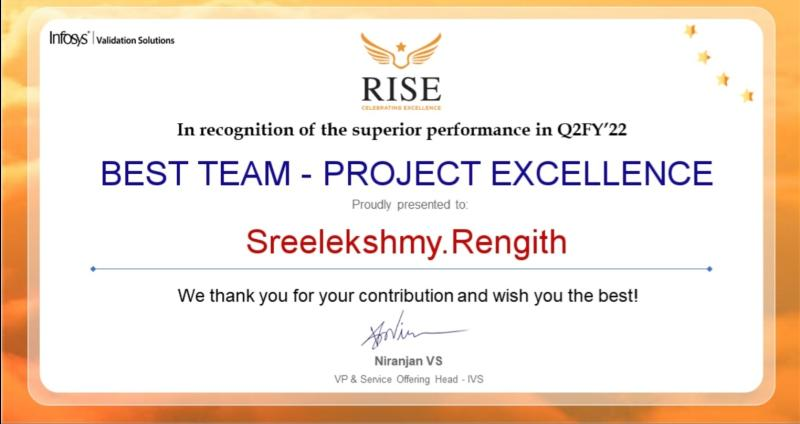

About Me
I am a dedicated Software Quality Assurance Engineer Intern at the Center for Advanced Transportation Technology Lab, with a strong background in automated testing, ETL processes, and data validation. I have experience streamlining testing workflows using Python and Cypress, which has led to increased data accuracy, reduced testing time, and faster release cycles. Previously, I worked at Infosys, where I optimized ETL data warehouse testing, improved testing efficiency, and managed successful data migrations across multiple projects. My proactive approach, collaboration skills, and keen attention to detail drive my passion for delivering reliable, high-quality software solutions.
GitHub
Professional Experience
Software Quality Assurance Engineer Intern
Center for Advanced Transportation Technology Lab, UMD
Jan 2024 - Present | College Park, MD
- Automated Data Validation with Python Scripts: Developed and deployed automated Python scripts to streamline data validation processes, significantly improving data accuracy by 30%. This automation ensured that large datasets in transportation analytics were thoroughly checked for consistency, anomalies, and errors, enhancing data integrity. The scripts reduced manual effort, minimized human errors, and enabled faster identification of discrepancies, leading to more reliable and precise insights for business decisions.
- Automated Testing with Cypress in JavaScript: Implemented robust Cypress automation frameworks to streamline testing processes, reducing manual testing time by 40% and accelerating release cycles by 25%. These frameworks enabled efficient, repeatable, and scalable automated tests for data-driven transportation solutions, which improved the overall testing coverage and reliability. As a result, the development team could quickly identify and address defects, enhancing the quality and stability of the software releases.
- Comprehensive Software Test Planning, Execution, and Defect Tracking: Successfully executed over 1,000 test cases across 10 different modules, playing a critical role in the identification and resolution of potential software issues. By continuously testing and tracking defects, reduced the number of critical bugs by 20%, ensuring that the software met high-quality standards before deployment. These efforts involved collaboration with development and product teams to refine requirements, prioritize issues, and implement effective solutions.
- Manual Testing for High-Quality Products: Conducted thorough manual testing across multiple transportation platforms, which led to the identification of over 50 critical bugs. This proactive approach to quality assurance resulted in a 15% boost in product performance. The process involved rigorous testing scenarios, edge case analysis, and cross-team collaboration to ensure issues were resolved promptly, contributing to a smoother and more efficient user experience.
- PRD Review and Defect Management: Facilitated detailed reviews of Product Requirements Documents (PRDs) to ensure that all critical functional areas were covered by manual testing. This comprehensive review process allowed the QA team to design test cases that addressed potential edge cases and overlooked scenarios, leading to a 30% reduction in post-release bug reports. Effective defect management practices, including timely reporting, tracking, and resolution, further contributed to the overall product quality and customer satisfaction.
Senior Systems Engineer - ETL Data Warehouse Testing
Infosys Limited
Jan 2022 - Apr 2022 | Trivandrum, India
- SQL Testing for Data Validation: Executed comprehensive SQL test scripts to ensure 100% data accuracy across multiple databases. This involved validating the alignment of database tables with design specifications, confirming data consistency, and identifying discrepancies. By maintaining strict validation protocols, these efforts significantly improved the reliability and integrity of data, which was crucial for downstream analytics and reporting functions.
- Improving Testing Efficiency: Developed and introduced reusable test case templates in Informatica PowerCenter, which resulted in a 20% boost in testing efficiency. The standardized templates facilitated quicker test case creation and execution, allowing for consistent daily validation checks. This approach led to a 30% reduction in data integrity defects, effectively streamlining the testing process and improving the overall quality of the ETL pipeline.
- ETL Process Optimization: Collaborated closely with cross-functional teams, including data engineers, analysts, and product owners, within a Scrum environment to optimize ETL processes. Through coordinated efforts, managed to reduce data processing time by 20%, enhancing system performance and ensuring faster, more accurate data flows. This optimization contributed to improved data processing efficiency, supporting timely and accurate data delivery across projects.
Systems Engineer - ETL Data Warehouse Testing
Infosys Limited
Nov 2019 - Dec 2021 | Trivandrum, India
- ETL Testing: Conducted comprehensive ETL testing by retrieving data from multiple source systems, executing ETL procedures, and verifying the accuracy of data transformations to ensure alignment with source-to-target mappings. Implemented rigorous quality checks, which resulted in a 98% data accuracy rate, significantly enhancing overall data reliability and integrity across the ETL pipeline.
- Functional and Regression Testing: Identified and resolved over 50 data anomalies within ETL processes, conducting thorough functional and regression testing to validate fixes and maintain consistent data quality within the data warehouse. These efforts ensured that data transformations met business requirements and that changes did not introduce new defects, contributing to stable and reliable data processing.
- Data Migration: Successfully managed the smooth migration of data from 10 diverse client sources into a centralized data warehouse, overseeing the seamless integration of disparate datasets. Ensured consistent data quality across all sources, allowing for accurate and efficient data analysis. This meticulous approach facilitated a unified view of data, supporting better decision-making for clients.
- Cross-Functional Collaboration: Enabled agile communication and collaboration within cross-functional teams, including developers, data analysts, and project managers, to streamline data migration efforts and refine the Software Development Life Cycle (SDLC) framework. These initiatives led to a 15% increase in workflow efficiency, optimizing business processes and ensuring a more coordinated approach to data management projects.
- 